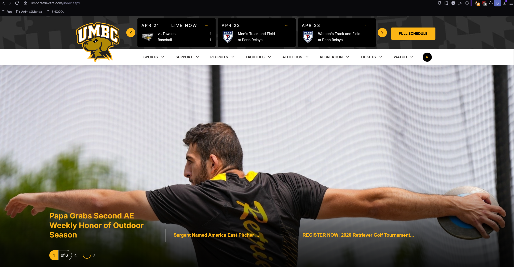
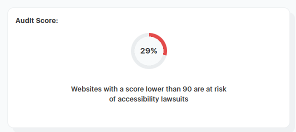

umbcretrievers.com is a website for the University of Maryland, Baltimore County infographic for their University sport teams. It shows schedules, links to their respective social medias, purchases for tickets, and more!

Their target audience reaches from the athletes on these teams themselves, their family and friends, UMBC supporters, and perhaps even scouts! This website shows off their roster for the respective sport, the tickets they sell for anyone that goes to watch the games, and highlights for athletes, friends, and scouts to enjoy or analyze!
This website seems to be organized in a hierarchical way, with a menu at the top of page that shows various options for what actions you need and will show branches into more options that will lead the audience into specific pages.
This accessibility checker found 88 issues and was found not compliant under US law.

While each page feels cluttered with information when you click on each source either the home page or a directed page, most of the functions that are most commonly used are all at the top in a bar for PC and in a responsive sidebar that you can open when in mobile resolution. There is even a search button on the right of the bar in case someone can't find what they need, they can search similar or exact results instead. Keeping these in one area simplifies the amount of area the consumer would need to search in order to find what they need. There are also a variety of pages that are sorted under each button.
While going through the pages there are a lot of interesting to read topics and even videos to look through! Every page that is linked is related to one other and feels appropriate to what the website is for and has a variety of sports to click through, their stories, and their rosters!
2 recommendations, first, fix the accessibility issues to comply with US accessibility laws. The second recommendation is to shrink the size of the home page sliding images at the top, while it is interesting to see at the start of the page, it is unnecessarily huge for the images provided as the real article is mostly text. There are also student athlete highlights below it which are just as interesting as the headlines in the huge images.